Self-contained HTML reports about size, structure, duplication, dependencies, people and trends. From any git repository, in any language. Free and open source.
docker run --rm -v "$(pwd):/code" ghcr.io/zeljkoobrenovic/sokrates analyze
open _sokrates/reports/index.html
No Docker? Run the JAR with Java 17+ · Step-by-step guide · Live examples
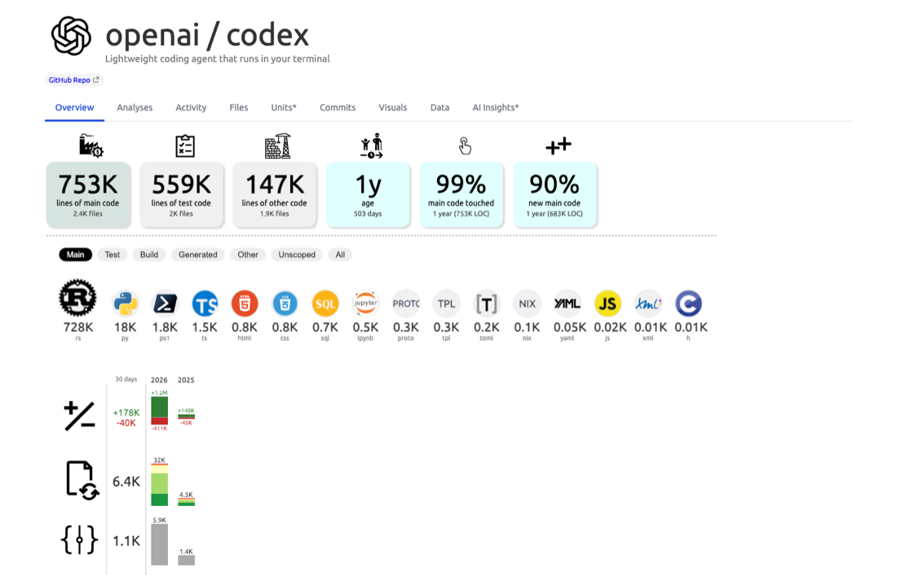
What you get
Every report, with a screenshot: Features.
Why Sokrates
- Show the code, skip the interviews. The analysis runs on the source and the git history. Nothing else is needed.
- Polyglot by design. Forty-plus languages in depth, every other text file at the basic level. Structure on top of grep, not a parser per language.
- Reports you can hand over. Static HTML that opens from disk or any web server. From one repository to a whole organization.
"Talk is expensive. Show me the code." — Željko Obrenović, who built Sokrates for Grounded Architecture.
Get started in one command
One command reads the git history, creates the configuration and writes the reports. Pick how to run it.
-
Have DockerDocker Desktop, Colima or Podman. Nothing else: no Java, no git binary. The image runs natively on Intel and Apple Silicon, on macOS, Linux and Windows.
-
Run analyze in the root folder of your projectcd <your-project> docker run --rm -v "$(pwd):/code" ghcr.io/zeljkoobrenovic/sokrates analyzeA git clone works best: the history feeds the contributor and trend reports. The first run downloads the image once; later runs start instantly.
-
Open the reportopen _sokrates/reports/index.htmlEverything Sokrates writes lands in your project folder: _sokrates/ (configuration and reports) and git-history.txt.
Tips & troubleshooting: alias, other commands, Windows, Linux, Colima, memory, versions
Alias: define it once, and every example on this site works verbatim:
Any other command works the same way — replace analyze:
- Windows PowerShell: use -v "${PWD}:/code" instead of "$(pwd):/code".
- Linux: the container writes as root, so add --user "$(id -u):$(id -g)" to keep the generated files owned by you (Docker Desktop on macOS/Windows maps ownership automatically).
- Colima (macOS): only your home folder is mounted into the VM, so keep the project under /Users/<you>.
- Updating: docker run reuses the image already on your machine and never checks for a newer one. If a command from this site is reported as unknown, run docker pull ghcr.io/zeljkoobrenovic/sokrates once, or add --pull always to the run command.
- Versions: :latest tracks the master branch; release tags are available as ghcr.io/zeljkoobrenovic/sokrates:<version>. See the package page.
- Memory: a run that ends in OutOfMemoryError: Java heap space, or stops in the middle without a message, needs a bigger Docker VM (see the note above); an explicit heap, -e JAVA_TOOL_OPTIONS=-Xmx6g, overrides the 75% rule but cannot exceed what the VM has.
-
Have Java 17 or newerAdoptium Temurin is a good free choice; java -version shows what you have. Git itself is not needed: Sokrates reads the repository history with JGit.
-
Download the JARIn the browser: sokrates-LATEST.jar (~20 MB, always the latest build of the master branch), or:curl https://d2bb1mtyn3kglb.cloudfront.net/builds/sokrates-LATEST.jar --output sokrates-LATEST.jar
-
Run analyze in the root folder of your projectcd <your-project> java -jar <sokrates-folder>/sokrates-LATEST.jar analyzeA git clone works best: the history feeds the contributor and trend reports.
-
Open the reportopen _sokrates/reports/index.htmlEverything Sokrates writes lands in your project folder: _sokrates/ (configuration and reports) and git-history.txt.
Tips & troubleshooting: alias, memory, reference date
Alias: define it once, and every example on this site works verbatim:
- Big repositories: give the JVM more memory, e.g. java -Xmx8g -jar sokrates-LATEST.jar analyze.
- Reference date: Sokrates counts commits and contributors relative to today (past 30 days, 90 days, year). To analyze an older snapshot, pass -date YYYY-MM-dd or set the SOKRATES_ANALYSIS_DATE environment variable.
-
Have Java 17+ and MavenThe source is on GitHub: github.com/zeljkoobrenovic/sokrates (free and open source, MIT license).
-
Clone and buildgit clone https://github.com/zeljkoobrenovic/sokrates.git cd sokrates mvn clean install # add -DskipTests for a faster buildThe build produces the command line interface as one runnable JAR: cli/target/cli-1.0-jar-with-dependencies.jar.
-
Run analyze in the root folder of your projectcd <your-project> java -jar <sokrates-repo>/cli/target/cli-1.0-jar-with-dependencies.jar analyze
-
Open the reportopen _sokrates/reports/index.html
Tips: alias, contributing
Alias: define it once, and every example on this site works verbatim:
The repository's CLAUDE.md describes the module architecture for contributors.
What analyze does
The analyze command chains the three steps of a Sokrates analysis. Each step is also available as a separate command, which is useful once you start refining the analysis or scripting it:
| 1. extractGitHistory | Reads the git log (with JGit, no git binary needed) and writes git-history.txt in the project root: one line per file change with date, author, commit and lines added/removed. This feeds the commit, contributor, file-age, churn and trend reports. Skipped when the folder is not a git repository (the reports about code size, duplication, structure and dependencies still work), or with -skipGitHistory. |
| 2. init | Creates the analysis configuration _sokrates/config.json using standard conventions: which files are main code, tests, generated or build files, how the code is decomposed into components, which "features of interest" to search for. Only when the file does not exist yet, so your edits survive later runs. The report is titled and linked after the git remote: the repository name, a link to it, the owner's avatar as logo and (for GitHub) the repository description — unless you set them yourself with -name, -description, -logoLink, -addLink or in the config file. Set SOKRATES_OFFLINE=1 to skip the GitHub lookup. |
| 3. generateReports | Runs all analyses and writes the HTML reports and data exports to _sokrates/reports/. Open _sokrates/reports/index.html: the reports are self-contained and open directly from disk (they load a few rendering libraries such as d3 and Mermaid from a CDN, so they need internet access). |
The workflow is iterative: run analyze, look at the reports, edit _sokrates/config.json (scope, logical decompositions, features of interest, goals and controls — see Configure the analysis below), and run analyze again. The AI insights tab shows how to let an AI coding agent refine the configuration and explain the results.
Options (all optional): -srcRoot <folder> analyzes another folder than the current one, -name/-description label the report, -conventionsFile uses custom scoping conventions for the initial configuration, -outputFolder changes where the reports go, -date sets the reference date for the "past N days" counts, and -dataOnly stores only reports/data/data.zip (the file landscapes read) without any HTML, explorers, visuals or source viewer — handy when the repository reports are not needed, e.g. for a landscape-only pipeline (on analyzeLandscape the same flag also keeps only the landscape's own data/data.zip). Run sokrates analyze -help for the full list.
Configure the analysis
Everything about an analysis lives in one file, _sokrates/config.json, created on the first run and never overwritten. Edit it and run analyze again. The keys a newcomer touches first:
| ignore, extensions | What to leave out (vendored code, fixtures) and which file extensions count. Each scope — main, test, generated, buildAndDeployment, other — has its own path and content filters. |
| logicalDecompositions | How the main code is grouped into components (by folder depth or by explicit path rules), which drives the component and dependency reports. A code base can have several decompositions. |
| concernGroups | "Features of interest": regex rules that find cross-cutting concerns (feature flags, security-sensitive code, debt markers) across files, with their own report. |
| analysis | Switches and risk thresholds: the size and complexity bands (fileSizeThresholds, unitSizeThresholds, fileComplexityThresholds, …) and the File Size report's "Large Files That Change Often" list (fileReadsForChanges: window, number of files, tokens per line). |
| goalsAndControls | Thresholds on the metrics (duplication, file size, unit size, complexity) that become traffic lights on the report index. |
| metadata, customTabs | The report's name, description, logo and links, and extra tabs showing any page in an iframe (addCustomTab edits these from the command line). |
Every key, with defaults and examples, for the repository configuration, the landscape files and the custom conventions: the configuration manual. Rather not edit JSON by hand? The AI insights skills let an AI coding agent write and check the configuration for you.
More examples
The examples use the sokrates alias defined in your track above (Docker, JAR or source build — the commands are identical).
Use exportStandardConventions to see the built-in conventions the default configuration is derived from: standard_analysis_conventions.json; a custom one looks like this. The keys are in the configuration manual.
Commit _sokrates/config.json to the repository to keep a tuned configuration; publish _sokrates/reports to GitHub Pages or any static host to share the reports.
Command line reference
Every command prints its options with -help. Without arguments, Sokrates prints this overview:
Usage: java -jar sokrates.jar <command> <options> Help: java -jar sokrates.jar <command> -help Commands: analyze, analyzeGitRepo, init, generateReports, analyzeLandscape, updateLandscape, analyzeGitHubOrg, analyzeGitLabGroup, updateLandscapePeopleConfigByUserName, updatePeopleConfigByUserName, updateConfig, addCustomTab, extractGitHistory, createConventionsFile, exportStandardConventions, extractGitSubHistory * analyze: One-shot analysis: extracts the git history (when the source root is a git repository), creates the analysis configuration if none exists (init), and generates the reports. The recommended way to get a first report: run it from the root of the code base without any options. - options: [-srcRoot <arg>] [-confFile <arg>] [-outputFolder <arg>] [-dataOnly] [-conventionsFile <arg>] [-name <arg>] [-description <arg>] [-logoLink <arg>] [-addLink <arg>] [-skipGitHistory] [-postAnalysis <command>] [-ai <claude|codex|gemini>] [-aiPrompt <text>] [-aiMaxRepos <count>] [-aiForce] [-date <arg>] [-timeout <arg>] [-help] * analyzeGitRepo: Clones a git repository from its URL into a temporary folder (JGit, no git binary needed), runs analyze on it, and keeps only the analysis — config.json and reports/ — in <destFolder> (default: <currentFolder>/<owner>/<repository>, e.g. junit-team/junit4); the clone is deleted. Re-runs clone again and reuse the kept config.json, so edits survive. The output layout is what analyzeLandscape expects, so several analyzeGitRepo runs in one folder plus analyzeLandscape make a landscape. For private HTTPS repositories set the SOKRATES_GIT_TOKEN (and optionally SOKRATES_GIT_USER) environment variable. - options: [-url <gitUrl>] [-destFolder <arg>] [-branch <arg>] [-depth <arg>] [-dataOnly] [-postAnalysis <command>] [-ai <claude|codex|gemini>] [-aiPrompt <text>] [-aiMaxRepos <count>] [-aiForce] [-conventionsFile <arg>] [-name <arg>] [-description <arg>] [-logoLink <arg>] [-addLink <arg>] [-date <arg>] [-timeout <arg>] [-help] * init: Creates a new Sokrates analysis configuration file based on standard and optional custom conventions - options: [-srcRoot <arg>] [-confFile <arg>] [-conventionsFile <arg>] [-name <arg>] [-description <arg>] [-logoLink <arg>] [-addLink <arg>] [-timeout <arg>] [-help] * generateReports: Generates Sokrates reports based on the analysis configuration - options: [-confFile <arg>] [-outputFolder <arg>] [-dataOnly] [-timeout <arg>] [-date <arg>] [-help] * analyzeLandscape: Creates or updates a Sokrates landscape report aggregating the repository analyses found under the analysis root (the landscape counterpart of analyze). With -url (repeatable) and/or -urls <file> (one git URL per line, # comments), it first runs analyzeGitRepo for each URL into <analysisRoot>/<owner>/<repository> (a failing repository is logged and skipped; -prune deletes the kept analyses of repositories no longer listed or no longer existing), then builds the landscape; without URLs it aggregates what is already there. Same options as updateLandscape, which is kept as the older name. - options: [-analysisRoot <arg>] [-url <gitUrl>] [-urls <file>] [-depth <arg>] [-dataOnly] [-prune] [-postAnalysis <command>] [-ai <claude|codex|gemini>] [-aiPrompt <text>] [-aiMaxRepos <count>] [-aiForce] [-conventionsFile <arg>] [-confFile <arg>] [-recursive] [-setName <arg>] [-setDescription <arg>] [-setLogoLink <arg>] [-addLink <arg>] [-timeout <arg>] [-date <arg>] [-help] * updateLandscape: Updates or creates a Sokrates landscape report, aggregating results of multiple analyses; with -url / -urls it first clones and analyzes those git repositories (the older name of analyzeLandscape, same options) - options: [-analysisRoot <arg>] [-url <gitUrl>] [-urls <file>] [-depth <arg>] [-dataOnly] [-prune] [-postAnalysis <command>] [-ai <claude|codex|gemini>] [-aiPrompt <text>] [-aiMaxRepos <count>] [-aiForce] [-conventionsFile <arg>] [-confFile <arg>] [-recursive] [-setName <arg>] [-setDescription <arg>] [-setLogoLink <arg>] [-addLink <arg>] [-timeout <arg>] [-date <arg>] [-help] * analyzeGitHubOrg: Analyzes whole GitHub organizations (or user accounts): for every -org (repeatable) and/or login in -orgs <file>, lists its repositories with the GitHub REST API, filters them (forks and archived repositories are excluded unless -includeForks / -includeArchived; -pushedWithinDays, -includeRepoNamePattern / -excludeRepoNamePattern and -maxRepos narrow further), writes the selection to <analysisRoot>/<org>/repos.txt, analyzes each repository into <analysisRoot>/<org>/<repository> (the analyzeGitRepo step) and builds a landscape per organization in <analysisRoot>/<org>/_sokrates_landscape, named, described, linked and branded from the organization's GitHub profile (only fields you have not set). With several organizations a parent landscape in <analysisRoot>/_sokrates_landscape lists them as sub-landscapes. -listOnly just writes repos.txt; -prune deletes analyses of repositories no longer selected. Set SOKRATES_GIT_TOKEN for private repositories and the higher API rate limit. - options: [-org <login>] [-orgs <file>] [-analysisRoot <arg>] [-includeForks] [-includeArchived] [-pushedWithinDays <days>] [-includeRepoNamePattern <regex>] [-excludeRepoNamePattern <regex>] [-maxRepos <count>] [-listOnly] [-prune] [-depth <arg>] [-dataOnly] [-postAnalysis <command>] [-ai <claude|codex|gemini>] [-aiPrompt <text>] [-aiMaxRepos <count>] [-aiForce] [-conventionsFile <arg>] [-setName <arg>] [-setDescription <arg>] [-setLogoLink <arg>] [-addLink <arg>] [-timeout <arg>] [-date <arg>] [-help] * analyzeGitLabGroup: The GitLab counterpart of analyzeGitHubOrg: for every -group (repeatable; a full path like gitlab-org/ci-cd or a URL, a username also works) and/or path in -groups <file>, lists the projects of the group and all its subgroups with the GitLab REST API (gitlab.com, or the instance given with -gitlabUrl or by a -group URL), filters them with the same options (forks and archived excluded unless -includeForks / -includeArchived; -pushedWithinDays, -includeRepoNamePattern / -excludeRepoNamePattern, -maxRepos), writes the selection to <analysisRoot>/<group path>/repos.txt, analyzes each project into <analysisRoot>/<group path>/<project path> (subgroups kept as folders) and builds a landscape per group in <analysisRoot>/<group path>/_sokrates_landscape, named, described, linked and branded from the group's profile (only fields you have not set); several groups get a parent landscape. -listOnly and -prune as for analyzeGitHubOrg. Set SOKRATES_GIT_TOKEN (sent as PRIVATE-TOKEN) for private groups. - options: [-group <path>] [-groups <file>] [-gitlabUrl <url>] [-analysisRoot <arg>] [-includeForks] [-includeArchived] [-pushedWithinDays <days>] [-includeRepoNamePattern <regex>] [-excludeRepoNamePattern <regex>] [-maxRepos <count>] [-listOnly] [-prune] [-depth <arg>] [-dataOnly] [-postAnalysis <command>] [-ai <claude|codex|gemini>] [-aiPrompt <text>] [-aiMaxRepos <count>] [-aiForce] [-conventionsFile <arg>] [-setName <arg>] [-setDescription <arg>] [-setLogoLink <arg>] [-addLink <arg>] [-timeout <arg>] [-date <arg>] [-help] * updateLandscapePeopleConfigByUserName: Updates (or creates) the landscape config-people.json by grouping all contributor emails sharing the same display name (userName) under one entry, joining the emails in the email field with ';'. Purely additive: appends only new emails to existing entries, never removes emails or entries. - options: [-analysisRoot <arg>] [-confFile <arg>] [-timeout <arg>] [-help] * updatePeopleConfigByUserName: Single-repository version of updateLandscapePeopleConfigByUserName: updates (or creates) _sokrates/config-people.json by grouping all contributor emails sharing the same display name (userName) under one entry. Reads only the repository's git-history.txt, so run it after extractGitHistory (no generateReports needed). Same config file and people-config format as landscapes. Purely additive. - options: [-confFile <arg>] [-timeout <arg>] [-help] * updateConfig: Updates an analysis configuration file and completes missing fields - options: [-confFile <arg>] [-skipComplexAnalyses] [-setCacheFiles <arg>] [-setName <arg>] [-setDescription <arg>] [-setLogoLink <arg>] [-addLink <arg>] [-timeout <arg>] [-help] * addCustomTab: Adds a custom iframe tab to the repository report configuration (config.json customTabs). If a custom tab with the same label already exists, it is overwritten instead of added. - options: [-confFile <arg>] [-label <arg>] [-iframeLink <arg>] [-help] * extractGitHistory: Extract a git history in a format used by Sokrates and saves it in the git-history.txt file - options: [-analysisRoot <arg>] [-help] * createConventionsFile: Create a new analysis conventions file and saves it in <current-folder>/analysis_conventions.json * exportStandardConventions: Export standard Sokrates analysis convention to <current-folder>/standard_analysis_conventions.json. * extractGitSubHistory: A utility function to split a git history file (git-history.txt) into smaller ones based on a commit file path prefix, removing the prefix from file path in split files - options: [-prefix <arg>] [-analysisRoot <arg>] [-help]
The full reference of every key in config.json and the landscape configuration is in docs/configuration.md.
Many repositories, one report
A landscape aggregates repository analyses into a portfolio view: size and languages per repository, who contributes where, how people and teams connect across repositories, and how all of it changes over time.
More on the Examples tab.
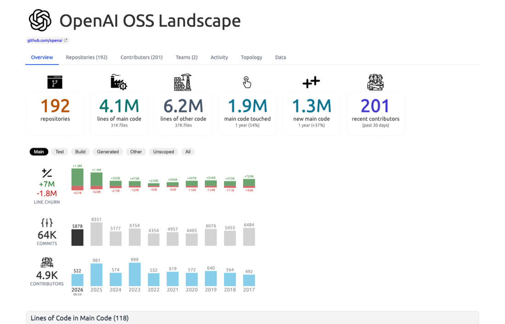
Build one
Three ways in, one result. The commands use the sokrates alias from the install guide; with Docker or the JAR they are the same.
-
From a list of repository URLs# repos.txt: one git URL per line https://github.com/junit-team/junit4 https://github.com/junit-team/junit-framework https://github.com/hamcrest/JavaHamcrest sokrates analyzeLandscape -urls repos.txt open _sokrates_landscape/index.htmlEach repository is cloned, analyzed and kept under <owner>/<repository> (no source stays behind); a repository that cannot be cloned is skipped. Re-run the same command to refresh; add a line to add a repository, remove one and add -prune to delete its analysis (also for repositories that no longer exist; only analyses the tool produced are ever deleted).
-
From a GitHub organization or a GitLab groupsokrates analyzeGitHubOrg -org junit-team -org hamcrest sokrates analyzeGitLabGroup -group gitlab-org/ci-cd # gitlab.com or -gitlabUrl https://gitlab.example.com # the resulting layout: landscape/ _sokrates_landscape/index.html # parent landscape, when there are several organizations junit-team/_sokrates_landscape/index.html # one landscape per organization junit-team/repos.txt # the selected repositories junit-team/junit4/config.json + reports/ hamcrest/...The repositories are listed through the API; the landscape takes its name, description, logo and link from the organization's profile, and every repository report takes its description and logo from the listing (a GitLab project without an avatar shows its group's) — only fields you have not set yourself, so your edits survive re-runs. Forks and archived repositories are skipped unless asked for; -pushedWithinDays, name patterns and -maxRepos narrow the selection, -listOnly previews it without cloning, -prune drops repositories no longer selected. Private repositories: set SOKRATES_GIT_TOKEN.
-
From analyses you already havemv junit4/_sokrates landscape/junit4 cd landscape sokrates analyzeLandscapeWithout URLs the command aggregates whatever analyses it finds under the folder, at any depth.
Configure
Four JSON files in _sokrates_landscape/, created on the first run and kept on later ones. Every key is in the configuration manual.
| config.json | Name, description, logo and links (or -setName, -setDescription, -setLogoLink, -addLink), thresholds, contributor and bot filters, virtual sub-landscapes. |
| config-tags.json | Regex rules that tag repositories by name, path or technology, driving the tag overviews. |
| config-teams.json | Email patterns that assign contributors to teams: team reports and team topology graphs. |
| config-people.json | Merges the several emails one person commits with. Bootstrap it with sokrates updateLandscapePeopleConfigByUserName. |
Sub-landscapes
Two ways to split a big landscape, usable together. Folder-based: any sub-folder with its own _sokrates_landscape/ appears in the parent's Sub-landscapes tab (run the command in each, or once at the top with -recursive). Virtual: repository-name patterns in the parent's config.json, no folders moved, nested to any depth; unmatched repositories go to a remainder landscape:
Publish
Everything is static HTML. Copy the root folder, repositories plus _sokrates_landscape/, to any static host — S3 and CloudFront, GitHub Pages, an internal web server — and all links keep working. Viewers need internet access for the rendering libraries loaded from a CDN; nothing is sent anywhere.
Let an AI agent read the analysis
Sokrates measures. The sokrates-skills add what only a reader can add: what the code is, what it depends on, where the real risks are, how it got here. Fifteen scanners write findings with verifiable evidence, six configuration skills tune Sokrates before it runs, and an improve skill acts on what was found and proves the effect with the same numbers.
Works with Claude Code, Codex CLI, Gemini CLI, Cursor, Copilot and any tool that loads Agent Skills. MIT.
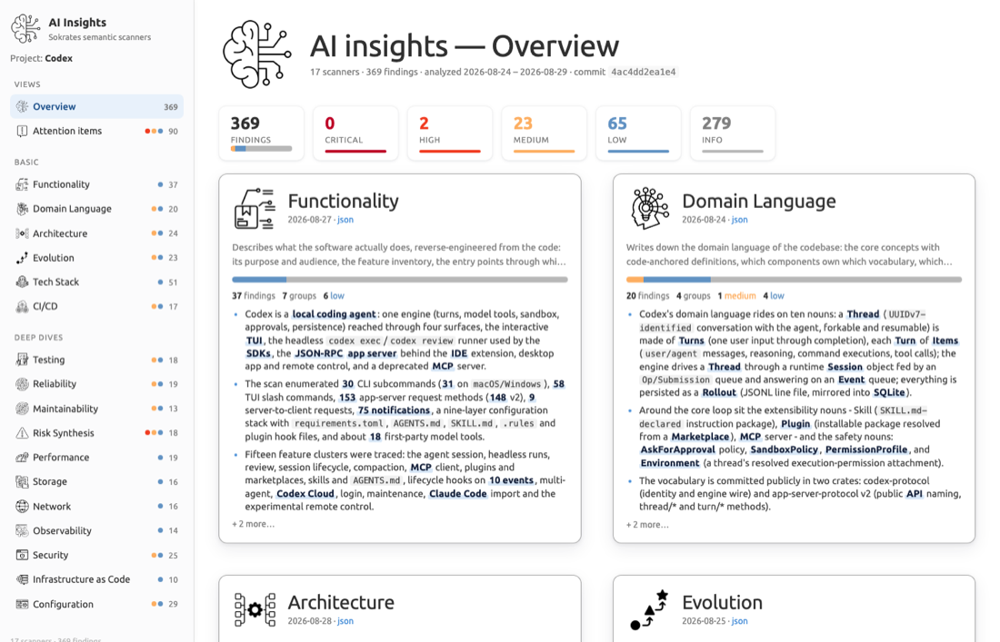
How to use
-
Install the skillssokrates installSkills # → ~/.claude/skills and ~/.agents/skills, for every tool at once sokrates installSkills -project # → the current project instead, shareable via gitSokrates clones the skills repository into ~/.sokrates/skills and links every skill; re-run to update. Python 3.9+ for the scripts, nothing else. Without Sokrates on the PATH: java -jar sokrates-cli.jar installSkills, or clone the repository and run its install.sh.
-
Analyze the projectcd <your-project> sokrates analyze
-
Refine the configuration, by askingOpen your agentic CLI of choice — Claude Code, Codex, Gemini CLI, Cursor — in the project folder and ask: "check the Sokrates configuration of this repository", "define meaningful components", "which features of interest should Sokrates track here?", "merge duplicate contributors". The agent picks the matching skill; each skill previews its effect on the real tree before Sokrates runs. Then sokrates generateReports.
-
Ask for insightsIn the same chat: "run a tech stack scan", "explain the risks in this codebase", "what does this software do?", "how did this codebase evolve?", or "run a full scan" for all fifteen. Every scanner reads the Sokrates data first and spends its reading where the numbers point. The same works headless, from a script or CI:claude -p "run a tech stack scan" # Claude Code codex exec "run a tech stack scan" # Codex CLI gemini -p "run a tech stack scan" --yolo # Gemini CLI sokrates analyze -ai claude # or let Sokrates run the agent right after each analysis
-
Open the explorer, and put it in the reportopen _sokrates/reports/ai-insights/index.html sokrates addCustomTab -label "AI Insights*" -iframeLink "../ai-insights/index.html" sokrates generateReportsThe explorer is a self-contained page: a page per scanner, attention items across scanners, severity and confidence filters, search, and every finding's evidence. The custom tab shows it inside the Sokrates report from now on.
Where each tool reads skills from, and optional illustrations
| Claude Code | ~/.claude/skills/, .claude/skills/; automatic, or /tech-stack-scan |
| Codex CLI | ~/.agents/skills/, .agents/skills/; automatic, or $tech-stack-scan |
| Gemini CLI | ~/.gemini/skills/ or ~/.agents/skills/; or gemini skills install <repo url> |
| Cursor | ~/.cursor/skills/ or ~/.agents/skills/; / in Agent chat |
| GitHub Copilot | ~/.copilot/skills/, .github/skills/ or .agents/skills/; gh skill installs from the repo |
| Other tools | any Agent Skills folder: ./install.sh <folder> |
Illustrations: python3 skills/illustrators/generate_summary_visuals.py <project>/_sokrates/reports/ai-insights (with GEMINI_API_KEY set) turns each scanner's summary into one calm picture shown in the explorer. Optional.
The skills
Why the findings can be trusted
- Every finding carries evidence: file, line range, verbatim snippet. A validator checks each snippet against the actual file, and a scan is not finished until it passes.
- Findings have a severity and a confidence; claims without evidence must say so. Scanners cite Sokrates data instead of re-measuring it.
- Finding ids are stable across runs, so two scans of the same project can be diffed: new, resolved, persisting.
Examples: Sokrates Analyses of Individual Repositories
Recent Sokrates Analyses of Big Projects and Whole GitHub Organizations
NOTE: Analysis is limited to repositories with commits in past year or two.


Older Examples


Overview
The first page of a report: lines of code per scope, age and freshness of the code, languages, and the activity of the last years.
Live example ↗Source code overview
Every file is classified as main, test, generated, build or other code. Files and lines per extension and per folder, with the biggest items listed.
Live example ↗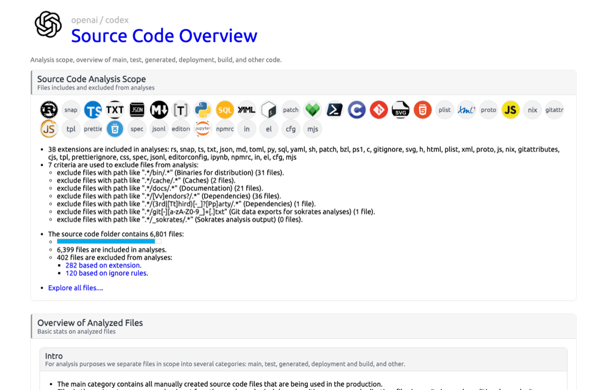
Duplication
Blocks of six or more identical lines, after stripping blanks, comments and imports. Per extension, per component and per file, with the longest and most frequent duplicates.
Live example ↗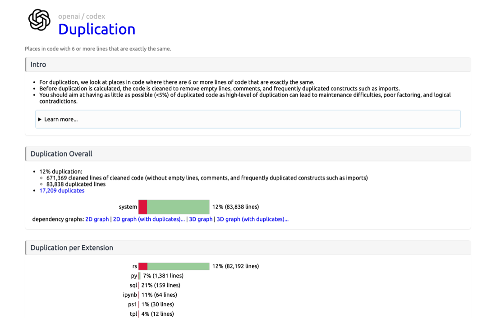
Components and dependencies
Components defined by folder depth or by explicit rules, several decompositions side by side, dependency graphs between them, and the cycles.
Live example ↗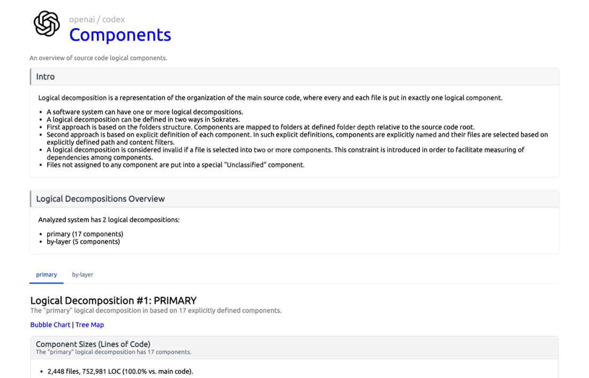
Features of interest
Cross-cutting concerns found by regular expressions: feature flags, security-sensitive code, debt markers, anything you can name with a pattern.
Live example ↗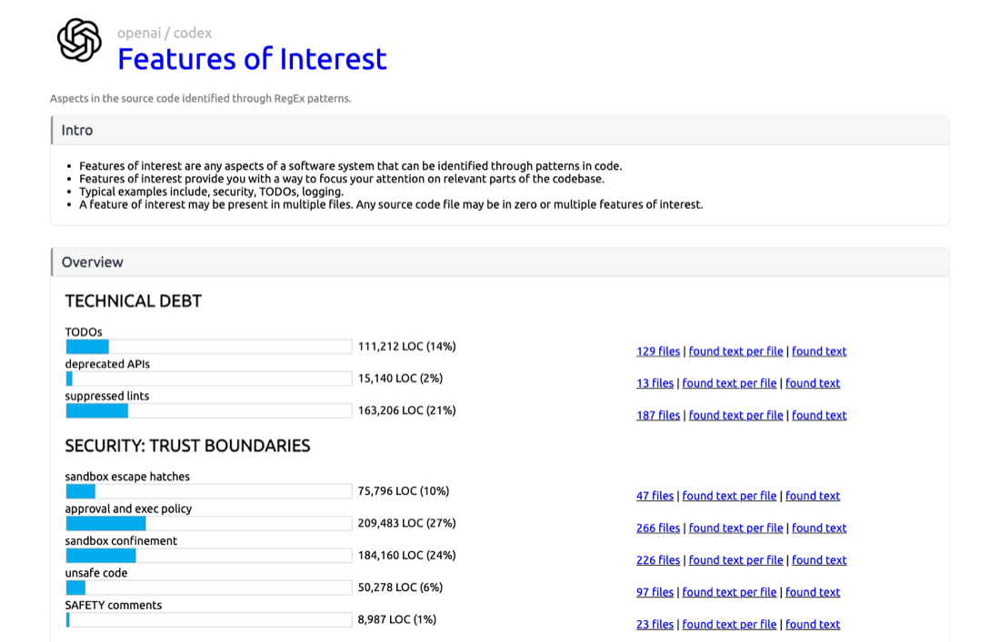
File size
How the lines of code are spread over small, medium, long and very long files, per component and per extension, and the large files that change often — read again for every change, by people and AI coding agents alike.
Live example ↗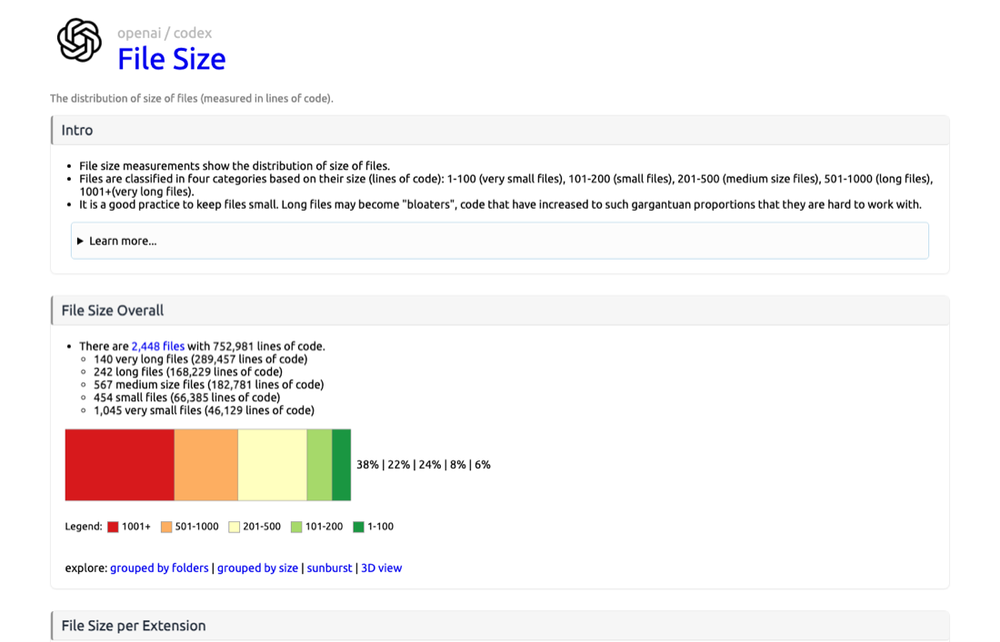
Unit size
The same for methods and functions, with the longest units listed and viewable in place.
Live example ↗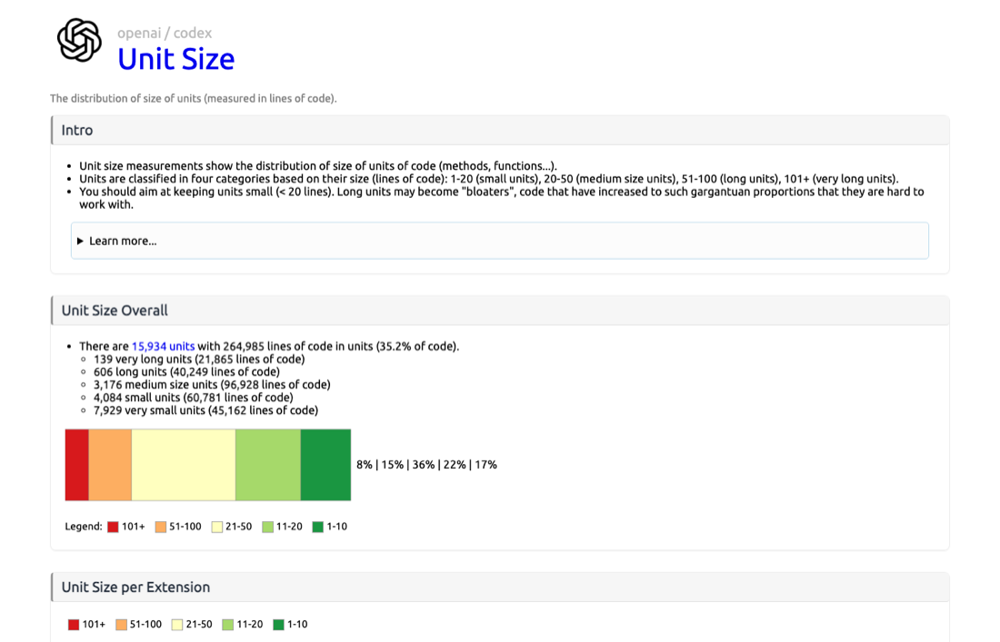
Conditional complexity
Cyclomatic complexity per unit, from simple to very complex, and where the complex code concentrates.
Live example ↗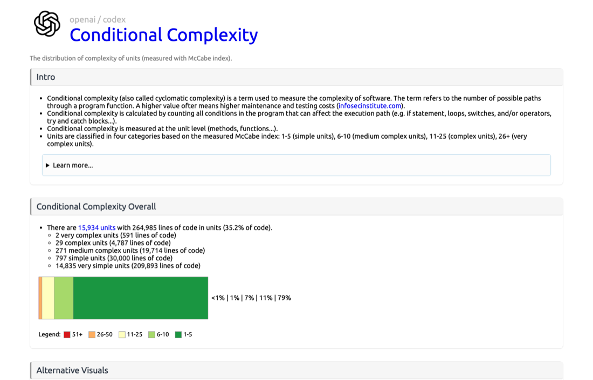
File age
Days since each file was created and since it was last changed. What is fresh, what has not been touched in years.
Live example ↗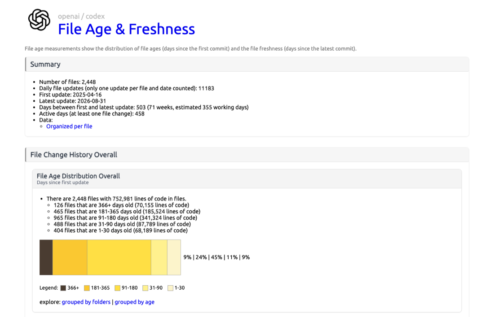
File churn
How often files change. The hot spots of a code base are the files that are both large and frequently updated.
Live example ↗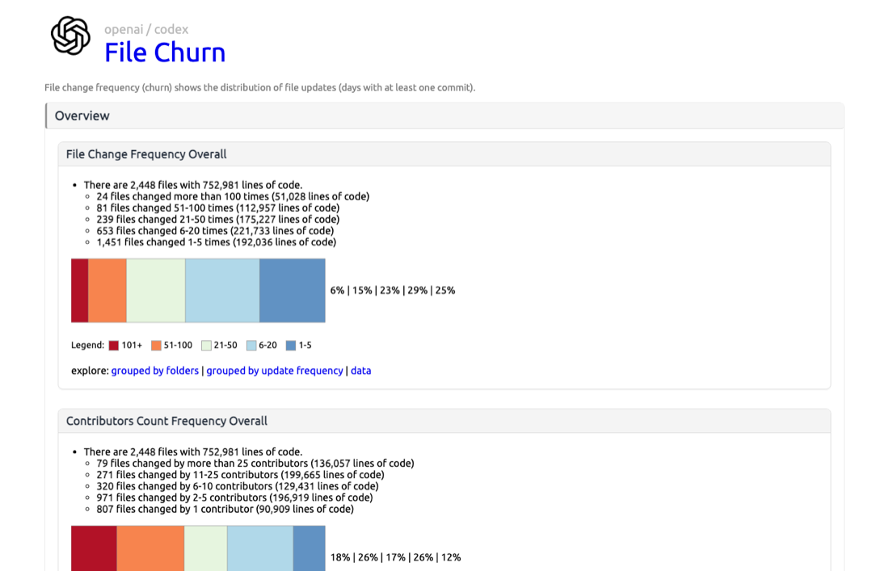
Temporal dependencies
Files and components that change together in the same commits, a coupling no static dependency shows.
Live example ↗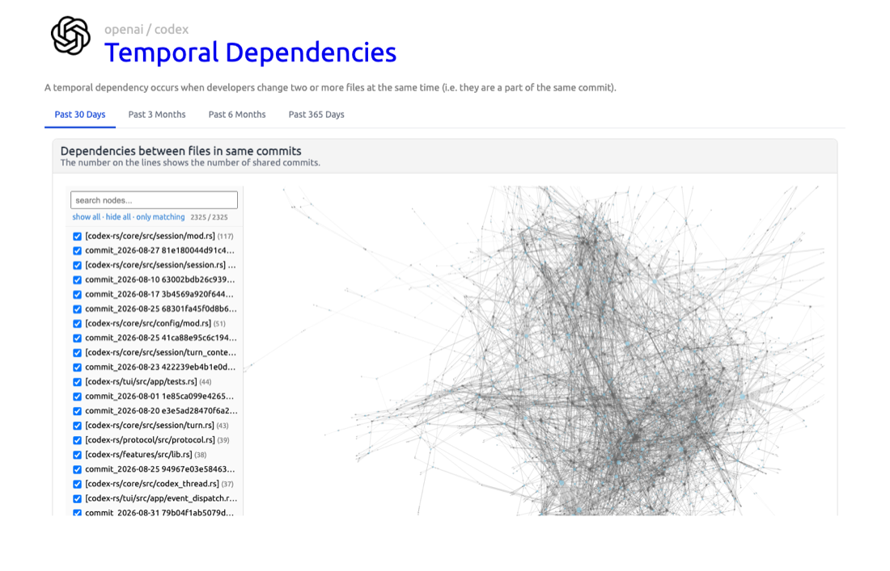
Contributors
Who works on what and how much, per period. Knowledge concentration, bots, and commits co-authored by AI agents.
Live example ↗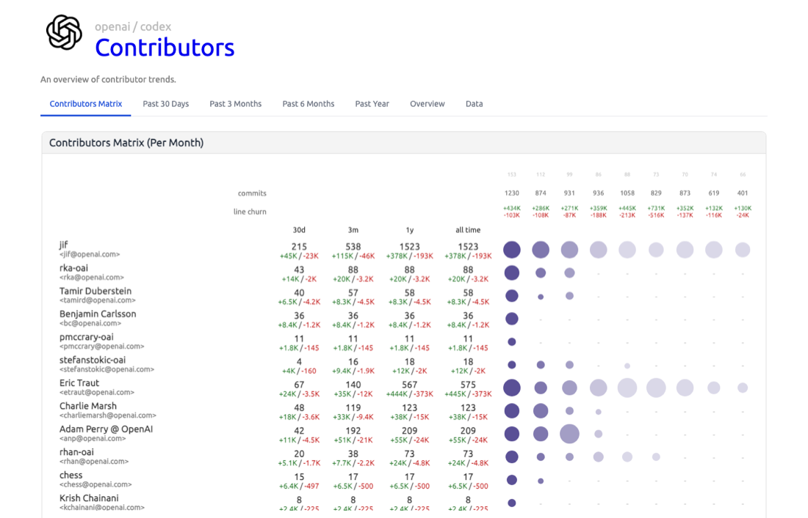
Commits and activity
Commits, churn and contributors per year, month, week and day, including the share of AI co-authored commits.
Live example ↗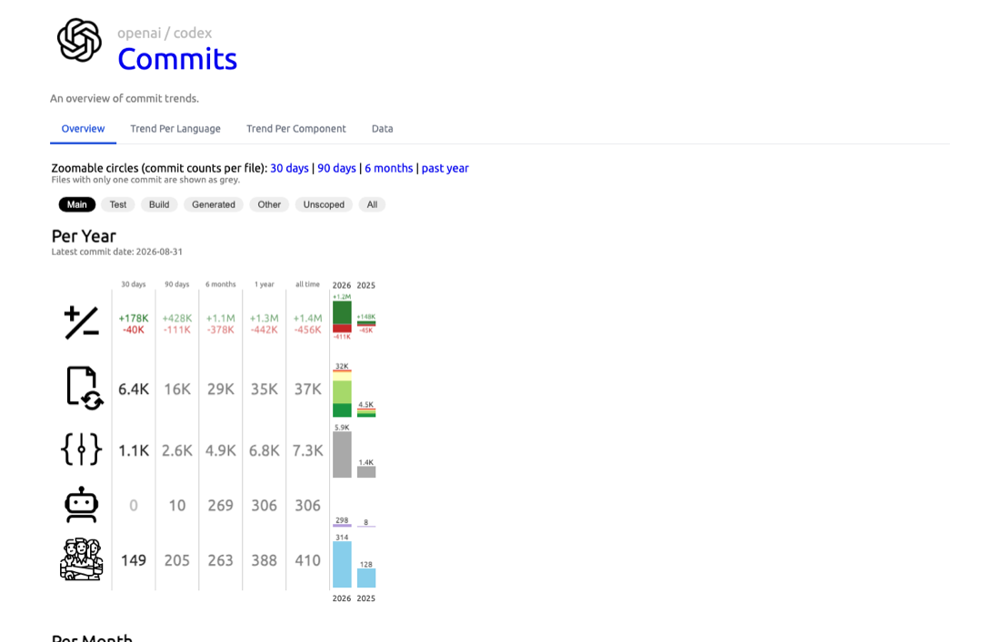
Trends
Snapshots of every metric over time, so a report also says which way the code base is moving.
Live example ↗Metrics and controls
Every measurement in one list, and goals with thresholds that turn into traffic lights on the first page.
Live example ↗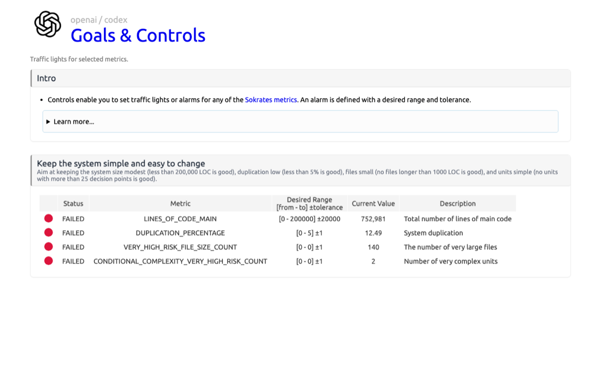
Explorers
Searchable, sortable tables of all files, units and commits, with the source in a built-in viewer. Select commits to see which files they touched.
Live example ↗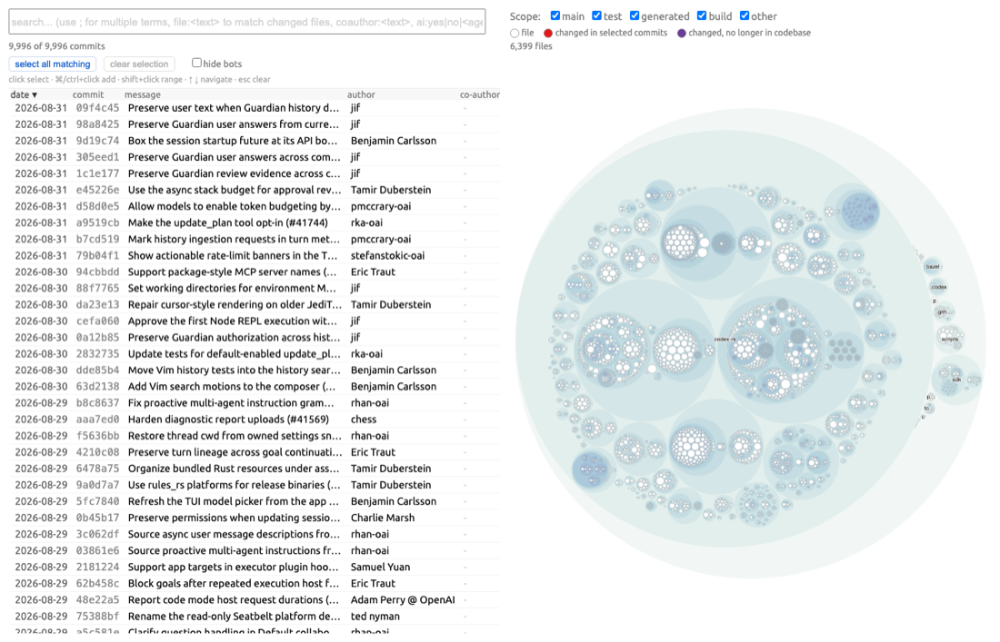
Visuals
Zoomable circle packings, sunbursts and 3D views of the whole tree, colored by scope, size, age or risk.
Live example ↗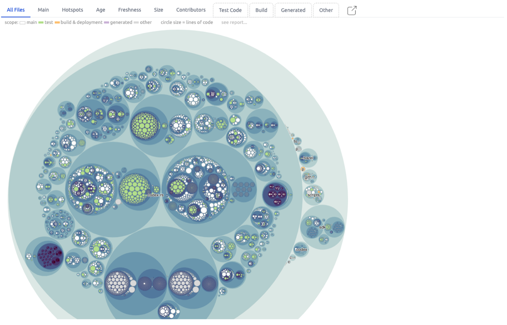
AI skills
Findings an AI coding agent writes on top of the analysis: what the software does, its architecture, risks and history, each with verifiable evidence.
Live example ↗Landscapes
All of the above aggregated over many repositories or a whole organization: sizes, languages, people, teams, trends, sub-landscapes, and the AI findings of every repository in one searchable tab.
Live example ↗Supported languages
Any text file gets the basic analyses: size, duplication, age, churn, temporal dependencies, contributors, features of interest, metrics and controls. These languages also get unit analysis (size, complexity) and, where marked, dependency extraction:
| Language | Units Analysis | Dependencies | Extensions |
|---|---|---|---|
| Abap | X | - | .abap |
| AdabasNatural | X | - | .nsd .nsh .nsn .nsm .nsp |
| CSharp | X | X | .cs .csx .cake |
| CStyle | X | - | .c .idc .cats |
| Cfg | - | - | .cfg |
| ClojureLang | - | - | .cljscm .wisp .cl2 .hl .clj .rg .boot .cljc .cljx .cljs .hic .edn |
| Cpp | X | X | .ipp .cc .h .hpp .cp .m .hh .c++ .hxx .tpp .mm .cpp .re .cxx .dart .h++ .tcc .inl .ino |
| Css | - | - | .css |
| D | X | - | .d .di |
| Dbc | - | - | .dbc |
| GoLang | X | X | .v .go |
| Gradle | X | X | .gradle |
| Groovy | X | X | .grt .gvy .groovy .gtpl |
| Hack | X | - | .hack |
| Html | X | X | .ascx .jsx .haml .mustache .htm .ashx .razor .erb .asmx .vue .aspx .soy .mtml .njk .deface .phtml .st .asp .jinja .handlebars .vbhtml .jinja2 .hbs .xhtml .axd .rtml .hhi .cshtml .xht .ecr .html .asax .eex |
| Java | X | X | .ck .j .java .uc |
| JavaScript | X | - | .jsb .jsm .cy .pac .es .xsjslib .jake .gs .cjs .sjs .js .es6 .xsjs .frag ._js .njs .ssjs .bones .jscad .jsfl |
| Json | - | - | .sublime-mousemap .sublime-theme .sublime-menu .webmanifest .json .tfstate.backup .geojson .sublime-commands .yyp .avsc .sublime_session .tfstate .sublime-workspace .gltf .sublime_metrics .json5 .sublime-macro .sublime-project .jsonc .webapp .ice .jsonl .har .topojson .jsonld .yy .mcmeta .sublime-completions .sublime-settings .sublime-build .jsoniq .sublime-keymap .JSON-tmLanguage |
| Jsp | - | - | .jsp .gsp |
| Julia | X | - | .jl |
| Kotlin | X | X | .ktm .kts .kt |
| Less | - | - | .less |
| Lua | X | - | .wlua .rbxs .rockspec .p8 .nse .pd_lua .lua |
| ObjectPascal | X | - | .dfm .p .pas .dpr .pascal .lpr |
| Perl | X | X | .al .t .ph .pl .plx .pm .psgi .perl |
| Php | X | X | .aw .php .php4 .php5 .php3 .phpt .phps .ctp .inc |
| PlSql | X | X | .plsql .pck .pkb .pks .plb .pls |
| Puppet | - | - | .pp |
| Python | X | X | .numpyw .pyde .xpy .wsgi .eb .gn .smk .gyp .rpy .pytb .py .numsc .numpy .gypi .lmi .py3 .pxd .pxi .pyi .pyp .pyt .pyx .pyw .tac |
| R | X | - | .rda .r .rds .rdata .rd .rsx |
| Ruby | - | X | .rbi .rbw .rbx .podspec .god .gemspec .rbuild .watchr .ruby .rb .eye .ru .builder .rabl .jbuilder .thor .mspec .rake |
| Rust | X | - | .rlib .in .rs |
| Sass | - | - | .sass |
| Scala | X | X | .sbt .kojo .sc .scala |
| Scss | - | - | .scss |
| Shell | - | - | .ksh .zsh .tool .sh .bats .tmux .bash .command |
| Sql | - | - | .viw .bdy .fnc .tpb .tps .spc .trg .cql .sql .mysql .prc .vw .tab .udf .ddl |
| Swift | X | - | .swift |
| Thrift | - | - | .thrift |
| TypeScript | X | - | .tsx .ts |
| VisualBasic | X | - | .bas .frm .cls .frx .ctl .vb .vba .vbs |
| Xml | - | - | .xmi .xml .sch .axml .csdef .glade .gml .gmx .wsdl .nuspec .cscfg .xsp-config .xquery .ct .rdf .xpl .xql .xqm .vcxproj .xacro .xqy .csproj .mxml .xsd .xsl .ivy .cproject .xproc .x3d .wsf .xul .tml .shproj .xproj .admx .ccproj .odd .adml .fsproj .wixproj .scxml .psc1 .targets .ncl .pluginspec .dita .workflow .sublime-snippet .wxi .wxl .wxs .xliff .fxml .ditamap .stTheme .jelly .dotsettings .clixml .ant .tmTheme .xslt .csl .pt .ccxml .builds .pkgproj .natvis .storyboard .sfproj .vsixmanifest .rss .tmSnippet .launch .xaml .nproj .ui .dll.config .ux .grxml .zcml .tmPreferences .xspec .tmLanguage .filters .xq .vbproj .mod .osm .srdf .props .ps1xml .depproj .kml .jsproj .plist .tmCommand .proj .ndproj .ditaval .owl .xml.dist .xib .mdpolicy .iml .mjml .vxml .vstemplate .urdf .resx .xlf .vssettings |
| Yaml | - | - | .sed .syntax .reek .rviz .mir .tf .yaml .sublime-syntax .yaml-tmlanguage .yml |
One archive per analysis
Every analysis writes everything it measured into one file, _sokrates/reports/data/data.zip. The HTML reports read from it, a landscape reads only it, and it is the contract for your own tooling — a Backstage plugin, a dashboard, a CI gate. analyze -dataOnly writes just this archive, no HTML.
Browse a real one: the data preview of the OpenAI Codex analysis lists every entry of its archive and shows any of them in the browser, for example analysisResults.json; the archive itself downloads as one file.
What is inside
Entry names are paths inside the archive. JSON files are the structured data; the text/ folder holds the same facts as plain lists, one item per line, for grep and spreadsheets.
| analysisResults.json | The whole analysis in one document: every metric, the five scopes, components and dependencies, features of interest, file
size and history distributions, units, duplication, contributors and their activity over time. The file a landscape reads. Its
top-level keys are listed below.
sample{
"metadata": { "name": "openai/openai-ruby", "description": "Official Ruby SDK for the OpenAI API",
"logoLink": "https://avatars.githubusercontent.com/u/14957082", "links": [ { "label": "GitHub", "href": "https://github.com/openai/openai-ruby" } ] },
"metricsList": { "metrics": [
{ "id": "TOTAL_NUMBER_OF_FILES", "value": 5317, "description": "Total number of files in the source folder" },
{ "id": "LINES_OF_CODE_MAIN", "value": 245331, "description": null },
… 413 more ] },
"mainAspectAnalysisResults": { "filesCount": 3174, "linesOfCode": 245331,
"linesOfCodePerExtension": [ { "name": "rbi", "value": 188708 }, { "name": "rb", "value": 55068 }, … ] },
"contributorsAnalysisResults": { "latestCommitDate": "2026-10-01", "contributors": [ … ],
"contributorsPerYear": [ { "timeSlot": "2025", "contributorsCount": 17, "commitsCount": 476, "fileUpdatesCount": 24551,
"linesAdded": 730073, "linesDeleted": 367022, "aiCoAuthoredCommitsCount": 1 }, … ] },
"duplicationAnalysisResults": { … }, "unitsAnalysisResults": { … }, "filesHistoryAnalysisResults": { … }, …
} |
| config.json | The configuration the analysis ran with, so the numbers can be reproduced and the scope is explicit.
sample{
"metadata": { "name": "openai/openai-ruby", "description": "Official Ruby SDK for the OpenAI API", … },
"srcRoot": "..",
"extensions": [ "rb", "rbi", "rbs", "yml", … ],
"ignore": [ { "pathPattern": ".*/[.]git/.*", "contentPattern": "", "exception": false, "note": "" } ],
"main": { "name": "main", "sourceFileFilters": [ { "pathPattern": ".*", "contentPattern": "", "exception": false } ] },
"test": { … }, "generated": { … }, "buildAndDeployment": { … }, "other": { … },
"logicalDecompositions": [ { "name": "primary", "componentsFolderDepth": 1, … } ],
"concernGroups": [ … ], "goalsAndControls": [ … ], "analysis": { … }
} |
| files.json, mainFiles.json, testFiles.json, … | One record per file: path, extension, lines of code, the components and features of interest it belongs to.
*FilesPaths.json are the plain path lists per scope.
sample[
{ "relativePath": "lib/openai/client.rb", "extension": "rb", "linesOfCode": 834,
"components": [ "primary::lib" ], "concerns": [ "::Unclassified" ] },
…
]
mainFilesPaths.json: [ "lib/openai.rb", "lib/openai/client.rb", … ] |
| units.json | Every function and method: file, start and end line, lines of code, McCabe complexity, parameters, statements.
sample[
{ "shortName": "initialize", "longName": "initialize", "relativeFileName": "lib/openai/client.rb", "fileLinesCount": 834,
"components": [ "primary::lib" ], "startLine": 605, "endLine": 832, "linesOfCode": 204, "mcCabeIndex": 55,
"numberOfParameters": 0, "numberOfStatements": 0 },
…
] |
| duplicates.json | Every duplicated block with all the places it occurs.
sample{ "title": "Duplication", "timestamp": "2026-10-01 20:55:35", "duplicates": [
{ "blockSize": 157, "duplicatedFileBlocks": [
{ "file": { "relativePath": "rbi/openai/models/admin/organization/usage_audio_speeches_response.rbi", "extension": "rbi", "linesOfCode": 897, "components": [ "primary::rbi" ] },
"startLine": 169, "endLine": 476, "cleanedStartLine": 130, "cleanedEndLine": 286 },
{ "file": { "relativePath": "rbi/openai/models/admin/organization/usage_web_search_calls_response.rbi", … },
"startLine": 171, "endLine": 478, … } ] },
… ] } |
| dependencies.json, logical_decompositions.json, concerns.json | Dependencies between components, the decompositions with their component definitions, the features of interest.
sampledependencies.json: [ { "from": { "anchor": "async_websocket.rb", "codeFragment": "lib/openai/helpers/.../async_websocket.rb", "files": [ … ] },
"to": { "anchor": "OpenAI::Responses::Transports", "files": [ … ] }, "fromFiles": [ { "file": { … }, "codeFragment": "" }, … ] }, … ]
logical_decompositions.json: [ { "key": "primary",
"components": [ { "name": "lib", "filesCount": 1570, "linesOfCode": 55068, "linesOfCodePerExtension": [ … ] }, … ],
"componentDependencies": [ { "fromComponent": "lib", "toComponent": "rbi", "count": 12 }, … ],
"fileCountPerComponent": [ { "name": "lib", "value": 1570 }, … ] } ]
concerns.json: [ { "key": "general", "concerns": [ { "name": "TODOs", "filesCount": 0, "linesOfCode": 0 }, … ] } ] |
| contributors.json | Every contributor with commits, file updates and lines added and deleted, overall and for the last 30, 90 and 365 days.
sample[
{ "userName": "Jane Doe", "email": "jane@example.com", "firstCommitDate": "2024-04-09", "latestCommitDate": "2026-09-30",
"commitsCount": 571, "commitsCount30Days": 12, "commitsCount90Days": 40, "fileUpdatesCount30Days": 310,
"linesAdded": 615296, "linesDeleted": 221058, "linesAdded30Days": 8045, "linesDeleted30Days": 2210, … },
…
] |
| text/aspect_*.txt | File lists per scope (aspect_main.txt), per component and per feature of interest.
samplePath Lines of Code .github/dependabot.yml 62 lib/openai.rb 1598 lib/openai/client.rb 834 … |
| text/*WithHistory.txt, text/temporal_dependencies*.txt | Files with their commit dates and contributors; pairs of files changed together, overall and per time window.
samplemainFilesWithHistory.txt (tab-separated): path # lines of code # active days days since first update days since last update # commits # commits (30d) # commits (90d) # contributors line churn … first updated last updated first contributor … lib/openai/client.rb 834 61 540 3 88 4 11 9 4120 … 2024-04-09 2026-09-28 jane@example.com … temporal_dependencies.txt: two paths and the number of commits that changed both, one pair per line |
| text/metrics.txt, controls.txt, units.txt, duplicates.txt | The flat versions of the metrics, the goal controls, the units and the duplicates.
samplemetrics.txt: TOTAL_NUMBER_OF_FILES: 5317 NUMBER_OF_FILES_MAIN: 3174 LINES_OF_CODE_MAIN: 245331 LINES_OF_CODE_MAIN_EXT_RBI: 188708 … |
| executionTimes.json, text/textualSummary.txt | How long each step took, and a short text summary of the analysis.
sample[ { "processing": "everything", "startMs": 1790880743715, "endMs": 1790880963761, "durationMs": 220046 },
{ "processing": "analysis/duplication", "durationMs": 52001 }, … ] |
analysisResults.json at a glance
The easiest entry point is metricsList.metrics: a flat list of a few hundred {id, value, description} records with stable ids such as LINES_OF_CODE_MAIN, NUMBER_OF_FILES_MAIN, LINES_OF_CODE_MAIN_EXT_JAVA, TEST_VS_MAIN_LINES_OF_CODE_PERCENTAGE, DUPLICATION_NUMBER_OF_DUPLICATED_LINES, NUMBER_OF_CONTRIBUTORS. The other keys hold the structured detail:
| metadata | Name, description, logo and links of the repository. |
| metricsList | Every measurement as {id, value, description}. |
| controlResults | The goals and their controls with the measured value and its traffic-light status. |
| mainAspectAnalysisResults, test…, generated…, buildAndDeploy…, other… | Per scope: file count, lines of code, and both per file extension. |
| logicalDecompositionsAnalysisResults | Per decomposition: the components with their size, and the dependencies between them. |
| concernsAnalysisResults, foundTags | The features of interest found, and the tags that matched the repository. |
| filesAnalysisResults | File size distributions overall, per extension and per component; the longest files. |
| filesHistoryAnalysisResults | File age, freshness, change frequency and contributor-count distributions; files without history. |
| unitsAnalysisResults | Unit size and conditional complexity risk distributions; the longest and most complex units. |
| duplicationAnalysisResults | Duplication overall, per component, per feature of interest and per extension; the longest and most frequent duplicates. |
| contributorsAnalysisResults | Contributors, and commits, file updates, churn and AI co-authored commits per year, month, week and day, also per scope. |
The shapes are the Java result classes serialized as they are, so a field you see in a report exists in the JSON under the same name. The source of truth is the results package.
A landscape's archive
A landscape writes its own _sokrates_landscape/data/data.zip, aggregated over its repositories:
| landscapeAnalysisResults.json | The totals and the list of repositories with their key numbers; what a parent landscape reads.
sample{ "repositoriesCount": 2, "mainLoc": 302583, "contributorsCount": 13, "recentContributorsCount": 4, "commitsCount": 1328,
"commitsCount30Days": 41, "cIndex30Days": 3.0, "c2cConnectionsCount30Days": 6.0, …
"repositories": [ { "name": "sokrates", "mainLoc": 57252, "commitsCount30Days": 35, … }, … ] } |
| repositories.json | One record per repository: metadata, size per scope, languages, activity, contributors, tags.
sample[
{ "metadata": { "name": "openai/openai-ruby", "description": "Official Ruby SDK for the OpenAI API", "logoLink": "…", "links": [ … ] },
"latestCommitDate": "2026-10-01", "commitsCount": 964, "commitsCount30Days": 35, "commitsCount90Days": 100,
"churn": 562323, "churn30Days": 14271, "contributors": [ "jane@example.com", … ], "contributors30Days": [ … ],
"mainLinesOfCode": 245331, "testLinesOfCode": 7345, "mainLang": "rb", "langs": [ "rb", "rbi", "yml" ], "tags": [ … ], … },
…
] |
| contributors.json, teams.json | Every contributor and team across repositories, with activity per period and the repositories they work on.
sample[
{ "contributor": { "userName": "Jane Doe", "email": "jane@example.com", "commitsCount": 670, "commitsCount30Days": 26, "linesAdded": 115565, … },
"mainLang": "java", "langs": [ "java", "html" ],
"repositories": [ { "name": "sokrates", "firstCommitDate": "2019-12-13", "latestCommitDate": "2026-10-01",
"commitsCount": 670, "commits30Days": 26, "commits90Days": 64, "commits180Days": 338 }, … ],
"members": [] },
…
] |
| files.json | Every file of every repository with its size and history.
sample[ { "repository": "sokrates", "path": "cli/src/main/java/nl/obren/sokrates/cli/CommandLineInterface.java", "scope": "main",
"mainLang": "java", "linesOfCode": 2104, "commitsCount": 212, "contributorsCount": 3, "latestCommitDate": "2026-10-01", … }, … ] |
| ai-insights.json | The AI scanner findings of all repositories, when any has them.
sample{ "repositories": [ { "name": "openai/codex", "insightsUrl": "../openai/codex/reports/ai-insights/index.html", "scannedAt": "2026-08-29",
"scanners": [ { "scanner": "architecture-scan", "version": "1.1", "findings": 24, "attention": 5, "summary": "…" }, … ],
"findingsBySeverity": { "info": 279, "low": 65, "medium": 23, "high": 2 }, "findings": 369, "attention": 90 } ],
"findings": [ { "repo": "openai/codex", "scanner": "risk-synthesis-scan", "id": "risk-synthesis-scan/hotspots/core-plugins-manager",
"group": "hotspots", "title": "Plugin manager cache-refresh coalescing is hand-rolled concurrent state logic",
"severity": "high", "confidence": "certain", "description": "…", "recommendation": "…", "tags": [ "rust", "concurrency" ],
"url": "../openai/codex/reports/ai-insights/index.html#risk-synthesis-scan%2Fhotspots%2Fcore-plugins-manager" }, … ] } |
| text/… | Plain lists: repositories per tag, people with most repositories, shared repositories between people, per time window. |
Release notes
Behaviour changes that can affect an existing analysis, newest first. The Docker image's :latest and the master branch carry everything under the most recent date; the full list lives in CHANGELOG.md.
4 October 2026
File Size report: large files that change often
The File Size report has a new section, Large Files That Change Often. To change a file, an AI coding agent (or a person) has to read it, so a big file that changes often is paid for on every change, while a big file nobody touches costs nothing. The table lists the main files read most for the changes of the past year (lines × changes) with their lines, the tokens to read them, their changes, the lines edited per change and the lines read per line changed. Highlights gets a matching Changes in large files tile (the share of changes that touched a file over 2,000 lines) and, only when there are such files, a short Large files that change often list below "Where to look first".
| Configure | The new analysis.fileReadsForChanges key: enabled (true; false hides the section, the tile and the list), windowDays (365; 0 = the whole history), maxFiles (20), largeFileLines (2000, what counts as large on Highlights) and tokensPerLineMin/tokensPerLineMax (7/14, the range behind "tokens to read"). |
| What to check | Nothing: new configurations get the key from init, older ones use the defaults (updateConfig writes them in). Without git history the section is not shown. |
Landscape reports get the sidebar
The landscape report now has the same left sidebar as the repository reports: its tabs are grouped as Landscape (Overview, Sub-Landscapes, Repositories, Activity), People (Contributors, Teams, Topology), Insights (AI Insights) and Index (Data) (no search field: there are only a few tabs). The landscape's name sits above the page header, counts move from the tab labels into the subtitle, and the landscape's links move into the Overview. Tab links such as index.html#repositories keep working.
Search filters the sidebar, no popup
The Search field at the top of the report sidebar now filters the sidebar's own pages as you type: groups without a match are hidden, Enter opens the first match and Esc clears. ⌘K / Ctrl+K or / still put the cursor in it. The popup command palette, which also searched the current page's tabs and sections, is gone. Theme, colour-blind colours and printing stay on the theme button, the sidebar checkbox and the browser.
File Complexity report
A new File Complexity report bands the main files by the sum of the McCabe indexes of their units, with the overall profile, the profile per extension and per component, and the most complex files; the Structure page gets a matching Complexity tab. Only files with units are classified. The bands come from the new analysis.fileComplexityThresholds (default 25/50/125/250); the older fileConditionalComplexityThresholds key, which nothing read, is ignored and can be deleted.
2 October 2026
Path patterns match the path below the source root
A filter's pathPattern — in ignore, the scope rules (test, generated, buildAndDeployment, other), decomposition filters and features of interest — is now matched against the file's path below the source root, with a leading slash: /src/app/service.py. Before, it was matched against the whole path as Sokrates loaded it, source root included.
| Why | With an absolute source root (Docker's /code, any absolute -srcRoot) the folders above the repository were part of every match. A repository checked out under a tests, docs, build or generated folder had all its files classified by that folder's name, and an ignore rule like .*/docs/.* could silently empty the analysis. |
| What stays the same | Every pattern written the documented way, starting with .* and naming folders inside the repository (.*/[Tt]ests/.*, .*[.]sql, .*/src/main/.*), matches exactly as before, also on top-level folders thanks to the leading slash. Folder-based components are unaffected. |
| What to check | A pattern that deliberately named a folder above the repository — .*/code/src/.* written against Docker's /code — no longer matches; drop the prefix: .*/src/.*. The sokrates-skills configuration scripts follow the new rule from the same date. |
-ai asks for a basic scan by default
The default prompt of -ai claude|codex|gemini now asks the skills' entry skill for a basic scan — the six descriptive scanners that answer "what is this codebase" — validated and rendered, and tells the agent not to change source files. Before it asked for a full scan, all seventeen scanners, hours per repository. -aiPrompt "run a full scan" restores it; -aiPrompt takes any request.
installSkills: the AI skills installed by Sokrates itself
sokrates installSkills clones the sokrates-skills repository into ~/.sokrates/skills (no git binary needed) and links every skill into the agents' skills folders: ~/.claude/skills for Claude Code, ~/.agents/skills for Codex, Gemini CLI, Cursor and Copilot. -project installs into the current project instead, -target anywhere else, -copy copies instead of linking. Re-running updates. An -ai run whose agent lacks the skills now says so in the log.
Dependencies declared for what the code uses
Build and dependency hygiene, found by running the sokrates-skills tech-stack scanner on Sokrates itself. No report, data format or command changes.
- Jackson is declared directly (jackson-databind 2.19.1, the version resolved before). The Jersey module that carried it transitively is gone — nothing used Jersey, so the fat jars no longer ship it.
- One Log4j version for API and core; slf4j-simple is replaced by log4j-slf4j2-impl, so JGit logs through the same Log4j backend and configuration.
- Java 17 API enforced at compile time with maven.compiler.release, so a build on a newer JDK cannot link against APIs missing on a 17 runtime. The bytecode level is unchanged.
- commons-cli is declared where it is used (cli), and the assembly plugin version is pinned so both fat jars are assembled the same way everywhere.
- The 3D views load a pinned x3dom (1.8.3 from jsDelivr) instead of an unversioned demo URL. Reports generated earlier keep the old URL until regenerated.
The analysis output is always ignored
init now writes the ignore rules for _sokrates/, _sokrates_landscape/, the git export text files and sokrates_*.json into every new config.json, also when nothing matches them yet — on a first analysis the output does not exist. Older configurations get the same rules in memory when the reports are generated; the file itself is not modified. Before, a second run of a fresh configuration counted the first run's reports as main code.
A relative -confFile analyzes the repository
generateReports -confFile _sokrates/config.json, run from the repository root, resolved the default srcRoot .. against the working directory's parent and analyzed that folder. It now resolves to the repository.
The Sokrates Book
- I am working on a book about Sokrates: Examined Line: The Art of Source Code Analysis with Sokrates.
- You can read the draft of the book online.
- The book is about 70% complete (an not polished).